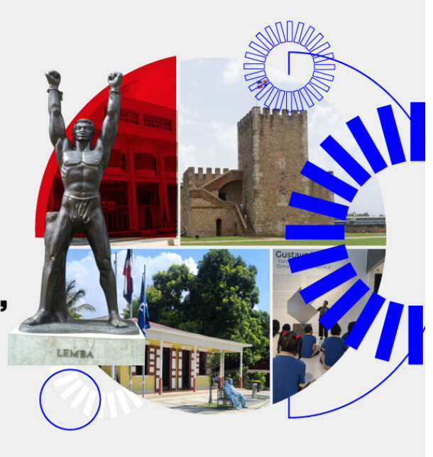

Proyecto
Ibermuseos
XII Encuentro Iberoamericano de Museos
Taller seleccionado sobre diversidad, mediación cultural y apropiación social del patrimonio.
Socios: Ibermuseos, Ministerio de Cultura de Brasil, UNESCO

Detalles
- Proyecto
- “Diversidad en acción: mediación y apropiación social del patrimonio”, seleccionado en la convocatoria de becas del XII Encuentro Iberoamericano de Museos.
- Contexto
- Santo Domingo, República Dominicana, centrado en museos, diversidad, patrimonio y cooperación iberoamericana.
- Temas
- Mediación cultural, patrimonio, diversidad, participación comunitaria y políticas museísticas.